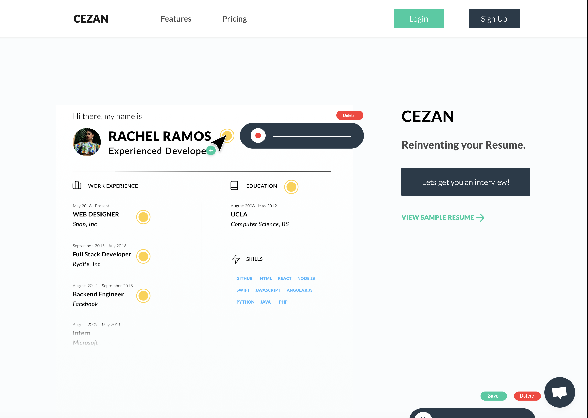
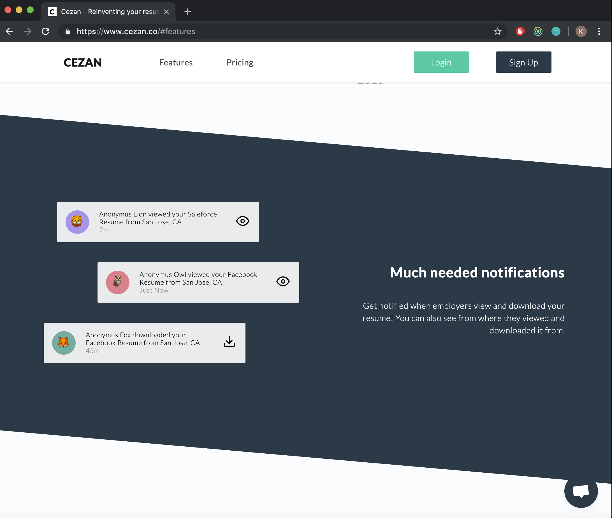

Cezan Co.
A web application for embedding audio in online resumes...


Cezan gave me the unique opportunity to work at an early stage start up as a full stack engineer, on a product that I truly believe in. Cezan allows users to embed audio into their online resumes to add a more personal touch to their job hunt. Our tech stack included JavaScript, React, Redux, Node, and Firestore. One specific task I was assigned was to update and improve upon our automated notification system. In addition to the technical growth I made at Cezan, I also learned how important it is to be flexible and adaptable in a start up environment, and I look forward to utilizing those skills in my next position.